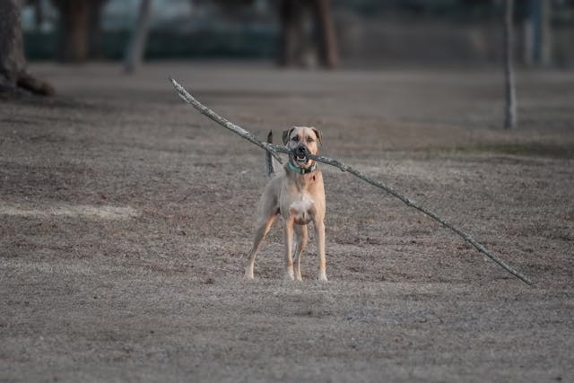

Dresajul câinilor

Dresajul
- Începe devreme Dresajul este mai eficient când câinele este pui, dar se poate face la orice vârstă.
- Recompense și consecvență
- Folosește recompense (gustări, laudă) pentru comportamente bune.
- Evită pedepsele dure — pot crea frică și agresivitate.